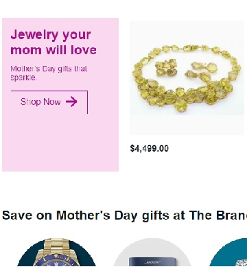
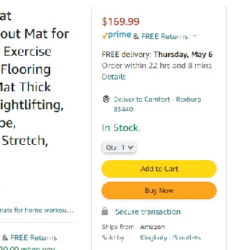
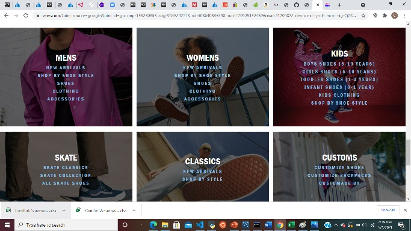

Fitt's Law
Ebay
The Ebay website uses Fitt's Law to bring attention to these products for users to be interested in buying it.
Visual hierachy
Amazon
The Amazon website uses Visual hierachy to make the important buttons like the "Add to cart" more prominent
Hick's Law
Vans
Vans website uses Hick's Law to make it easier for a customer to make a choice by displaying the different categories to shop in.